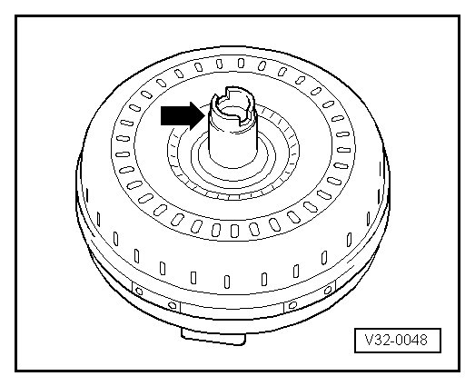
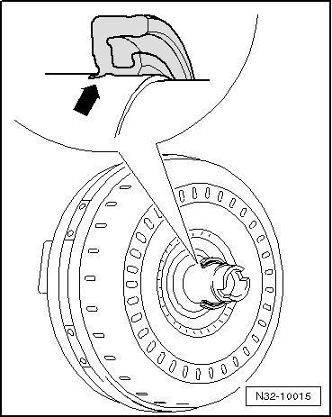

Removal and Replacement
Torque Converter Installing
- Lubricate converter hub and sealing lips on converter seal with a drop of Automatic Transmission Fluid (ATF) (no more!).

- Slide converter into transmission as far as stop.
- Now rotate converter and press it into transmission with light pressure.
The converter slides noticeably farther into transmission when the converter hub cut cut slides into the pump gear coupling plate.
When replacing the converter, the outer sealing lips of the seal can fold inward.
- Therefore, pull the converter 5 mm back out of the transmission.
This brings the seal lips into their correct position.

- Then slide the converter into the transmission as far as stop.
The converter is installed correctly when the transmission can be positioned on the engine flange without using force.
- If that is not the case, check the installation of the converter.
CAUTION!
If engine and transmission are connected forcefully when the converter is installed incorrectly, damage to the transmission and converter results.
Drive plate to converter bolt tightening specifications, refer to --> [ Tightening Specifications ] Tightening Specifications.
- After installing transmission, check the ATF level and top off. Refer to --> [ ATF Level Checking and Filling ] ATF Level Checking and Filling.